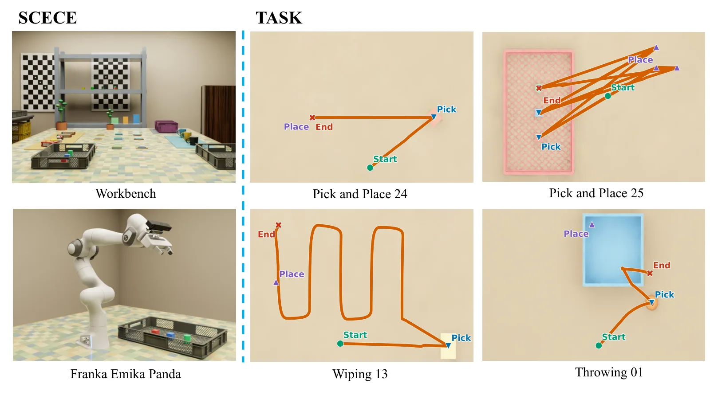
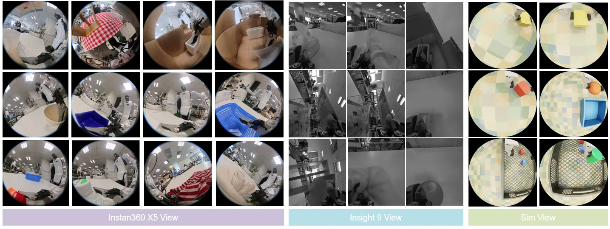
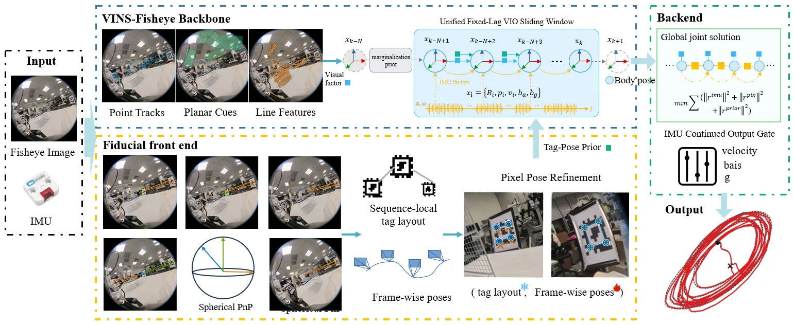

面向 UMI 式机器人操作示教的末端执行器精确定位：MILD 基准与 AprilVINS
Towards Accurate End-Effector Localization for UMI-Style Robotic Manipulation Teaching
提出近距操作接口定位基准 MILD（86 段真实序列 / 15 类桌面任务 / 三种工作空间变体 + Isaac Sim 子集）与 AprilTag 辅助鱼眼 VIO 系统 AprilVINS；后者在无预测绘标记地图下把序列局部 tag 先验准入滑窗并守护导出，AprilTag4 上 TCP 相对 APE RMSE 达 2–10 mm（无标记 VIO 为 30–80 mm），并用 MILD-Sim 把误差映射到任务回放容差。
APE RMSE
VIO-only RMSE
sequences
replay tolerance
作者、单位与技术谱系 · Research context
作者与单位
研究脉络
- VINS-Fisheye / VINS-Mono（Qin et al., 2018）、OpenVINS（Geneva et al., 2020）、DM-VIO（Von Stumberg & Cremers, 2022）方法基座关系：AprilVINS 以固定滞后滑窗 VIO 为躯干，这些系统同时是被评测/对照的 VIO 上游。[论文 §2.1、§5.1]
- AprilTag（Olson, 2011）、TagSLAM（Pfrommer & Daniilidis, 2019）、UcoSLAM（Muñoz-Salinas & Medina-Carnicer, 2020）方法上游关系：基准标记定位与把标记并入因子图/特征流水线的前作，是 AprilVINS 的 fiducial 上游与对照。[论文 §2.4]
- 团队多传感器 SLAM 基准线：Ground-Challenge / M2DGR / Ground-Fusion / Ultra-Fusion（Yin et al.）团队前作关系：通讯作者团队的传感器融合与地面 SLAM 基准工作，为 MILD 的‘多指标、面向退化场景评测’提供直接谱系。[论文 §2.2 与参考文献]
- UMI / FastUMI / UMI-Bench（Chi et al., 2024 等）问题上游关系：UMI 式操作接口确立了‘野外采集、先测绘后定位’的示教范式，也是本文要补上定位评测的对象。[论文 §1、§2.3]
合作网络
- 七机构跨国共同署名Shanghai Jiao Tong University（Jie Yin） → Chongqing Univ. / NWPU / Univ. of Tokyo / Jiaxing Univ. / Sichuan Univ. / BIT关系：共同署名[arXiv 首页署名]
- Yin 团队地面 SLAM 基准线（同作者延续）Jie Yin → Ground-Challenge / M2DGR / Ground-Fusion / Ultra-Fusion关系：同作者相关前作（基于来源的解读）[论文参考文献 [2][3][6][7][20]]
- 对 UMI / TagSLAM / UcoSLAM / OpenVINS / Isaac Sim 的公开技术依赖MILD / AprilVINS → UMI 接口、TagSLAM、UcoSLAM、OpenVINS、DM-VIO、ORB-SLAM3、Isaac Sim关系：明确技术依赖（非共同署名）[论文 §3、§5 与参考文献]
作者与单位来自论文首页署名（含通讯作者标注与等贡献标注）；谱系依据正文引用与同作者作品的标注为“基于来源的解读”。合作边仅记录共同署名与公开技术依赖，未推断导师或师生关系。
方法本质拆解 · What actually changed
是不是微调？
AprilVINS 不是学习式训练：它是基于固定滞后滑窗的优化式 VIO（VINS-Fisheye 躯干），tag 位姿以带信息矩阵的先验因子形式进入滑窗目标（式 10），没有任何网络权重被训练。改动集中在‘如何构造与准入 tag 先验’和‘如何守护导出’，属测试时/在线估计算法。
有没有额外约束？
新增约束有三类：图像空间的单位球 bearing 观测模型与切平面残差（避免图像边缘的针孔近似）、序列局部 tag 布局的正则化最小二乘（式 6，首个 tag 固定规范）、以及把 tag 位姿作为带头信息矩阵 Σ_p/Σ_R 的先验残差（式 7–9）；插入由二值门 a_k^tag 在几何、时间戳与 SE(3) 一致性通过后控制。
推理/后端到底做了什么？
在线推理：鱼眼图像 + IMU 进 VINS-Fisheye 滑窗，平行前端做 AprilTag 检测与球面 PnP 序列局部布局估计，通过检查的 tag 位姿作为先验进入滑窗联合优化；随后用 guarded continuation 按预定义惯性权重调度逐阶段求解，只导出连续成功阶段的解，再经标定链转成 TCP 轨迹。没有额外的第二后端优化器，tag 先验直接修改既有滑窗的残差。
方法本质是什么？
本质是：把‘人工标记几何’当成无需预测绘的序列局部先验注入鱼眼 VIO，并把‘精度’与‘可导出性’两个决策分离——准入决定观测是否影响状态，守护决定状态是否稳定到可作轨迹导出。它改变的是近距鱼眼操作下 VIO 的可观测性与时间完整性，而不引入新的学习模型或全局后端。
输入为操作接口的鱼眼图像与 IMU（及已知 tag ID/尺寸）；改变的位置是在 VINS-Fisheye 滑窗上并行加一个估计序列局部 tag 几何的球面 PnP 前端、以门控先验残差插入滑窗；合并动作是只准入一致通过的 tag 先验、并用 guarded continuation 只导出连续成功阶段的联合状态；直接效果是 Insta360 AprilTag4 上 TCP 相对 APE RMSE 达 2–10 mm（无标记 VIO 30–80 mm）且时间覆盖完整。

桥接价值Bridge
桥接价值
MILD 把一个常被忽视的传感层问题——‘UMI 式示教采集里末端执行器轨迹能否被可靠、时间完整地恢复’——提升为可评测对象，并给出配套算法 AprilVINS。它位于“底层几何/状态估计”与“具身决策/操作示教”的接口上：定位误差既改变用于学习的数据路径，也在回放时改变夹爪与物体的空间关系；论文进一步用 MILD-Sim 把估计误差映射到任务容差，使‘几毫米’这个数字有了任务语义。因此它是把‘可靠状态估计’直接接到‘具身操作’评价的桥梁，值得作为操作/示教数据链路的基准参考。
方法与模块Method
方法摘要
MILD 真实子集包含 86 段序列（Insta360 X5 67 段、Insight9 19 段）、15 类桌面任务（Analemma/Circular/Zigzag/Bookshelf/Box/Pick-and-place/Wiping）、三种工作空间变体（无标记/桌布纹理/ArUco 与 AprilTag 标记），由 AGIbot G2 人形执行 record-and-replay，每段执行自带 TCP 参考轨迹；另有 Isaac Sim 的 MILD-Sim 用于回放研究。AprilVINS 以 VINS-Fisheye（点/面/线特征 + 固定滞后滑窗）为躯干，平行接入一个 AprilTag 前端的球面 PnP 序列局部标记布局估计，把‘先验准入（admission）’与‘受守护导出（guarded export）’分开：只有通过几何、时间戳与 SE(3) 一致性检查的 tag 位姿才作为先验进入滑窗（式 7–10），导出时用 guarded continuation 只取连续成功的求解阶段状态（式 11）。
可迁移模块
可迁移处有三：一是‘图像空间/单位球 bearing 的鱼眼 tag 观测模型 + 切平面残差’（式 3–5），避免图像边缘的针孔近似误差，可直接用于你广角/鱼眼传感器上的标记或地标观测。二是‘序列局部标记几何在线估计、无需预先测绘地图’——首个被接受的 tag 固定规范，后续只用当前帧可见的连通观测图，这对你在临时/未知环境用人工地标辅助定位很有价值。三是‘先验准入与导出守护分离’的双门控设计，把‘一个被接受的观测是否可影响状态’与‘结果状态是否稳定到可导出’解耦，与你后端里应把‘观测质量控制’与‘结果可用性判定’分开的原则一致。

证据Evidence
关键证据与数字
来源：论文表 III–V、图 8。(1) 同一批 Insta360 AprilTag4 任务上，无标记鱼眼 VIO 的 APE RMSE 约 30–80 mm，而 AprilVINS(full) 为 2–10 mm（如 Pick-and-place 02 为 0.0017 m、Wiping 02 为 0.0033 m），时间覆盖率 1.00。(2) 消融分离精度与可导出性：AprilVINS W/O Tag Factors 保持厘米级（与 VINS-Fisheye 相近），W/O Output Gate 与 full 都达毫米级——说明 tag 因子驱动大部分精度增益，而输出守护主要恢复时间连续性（W/O Output Gate 在多任务带 † 碎片标记，full 消除大于 0.15 s 的断裂）。(3) 标记数量不单调：TagSLAM(actual-count) 在 6 个任务里 AprilTag2 可跟踪但 AprilTag4 全部失败；UcoSLAM 在 ArUco2/Circular 出现 0.027 m 但覆盖率仅 0.02，属‘低误差落在极短片段’的误导情形。(4) 任务容差（图 8）：50% 回放成功对应的平移误差从 Peg Insertion Side 的 3 mm 到 Ballistic Toss 的 19 mm，Cube Grasp/Lift、Stack Pyramid、Compliant Wiping 约 6–7 mm、Cyclic Tabletop Rearrangement 约 10 mm；无标记 VIO 的 30–80 mm 落在多个接触敏感任务的陡降区，而 AprilVINS(full) 的 2–10 mm 更靠近容差拐点。
边界与下一步Limits & Next Step
边界与风险
风险有四：其一，论文明确其路线比较是‘各自记录装置下的诊断性案例研究，而非单一受控排名’，AprilVINS(full) 的每个序列还使用按同一规则集选出的序列专属 profile（门限/先验权重/续算调度），故其相对基线的优势中包含配置选择效应。其二，参考轨迹来自机器人记录的运动学与编码器（而非外部动捕），故 TCP 相对误差同时包含标定、时间同步与机器人状态不确定性。其三，与商用示教设备（Insight9 SDK VIO、PICO Controller）的对比非硬件匹配、仅在重叠任务上给出，不能读作受控跨设备排名。其四，无标记鱼眼 VIO 与 ORB-SLAM3 在近距鱼眼操作上大面积失败（ORB-SLAM3 在所列任务上均无可评估轨迹），说明结论对相机模型与后端适配敏感。我们待核验：代码/数据/评估清单‘将录用后发布’，截至抓取尚不可复现。
下一步实验
(1) 在自建操作/手眼数据上复现‘先验准入 vs 导出守护’双门控，做最小 A/B：关闭输出守护对 APE RMSE 与时间覆盖率的影响，量化‘低 RMSE 但碎片化’是否也出现在你的流水线。(2) 把 MILD 的多指标协议（APE RMSE + 时间覆盖率 + 最大样本间隔）接入你的 VIO/融合评测，取代单一 RMSE。(3) 借用图 8 式‘任务容差曲线’，把你的定位误差映射到具体操作任务的成功率，判断给定误差是否足以支撑示教回放。(4) 在鱼眼/广角下验证其球面 bearing + 切平面残差的 tag 观测模型相对针孔近似的边缘精度增益。



